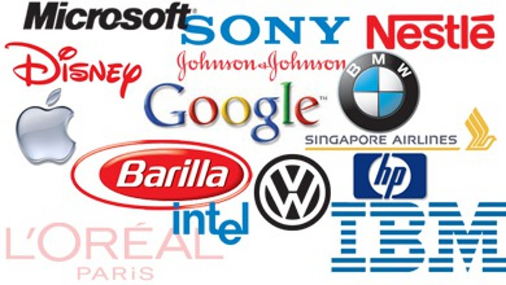
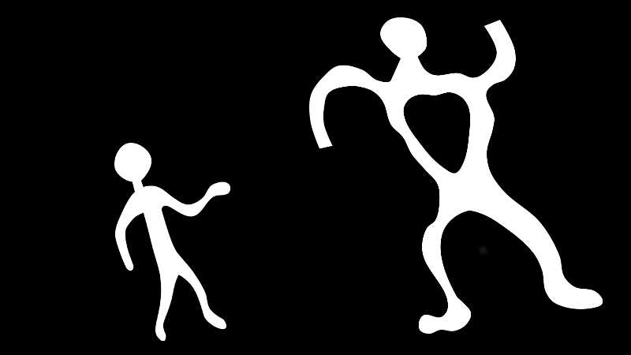
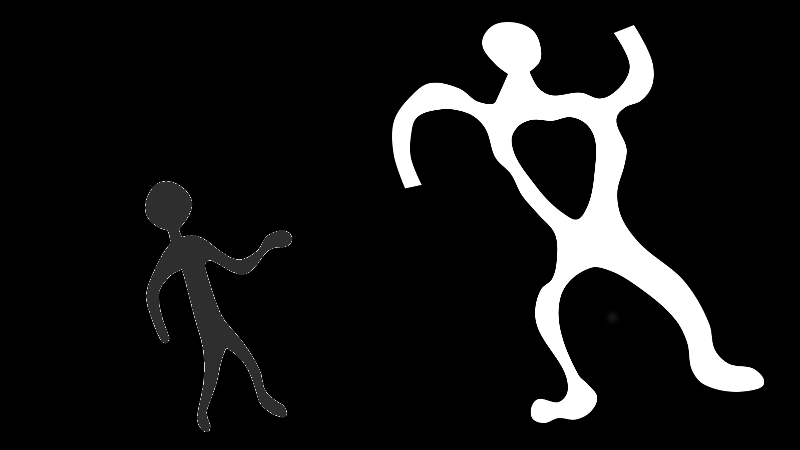
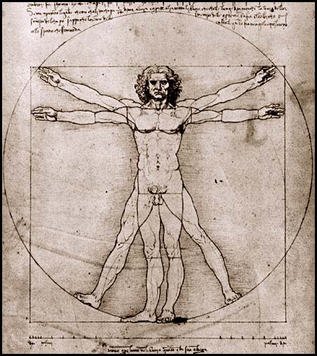
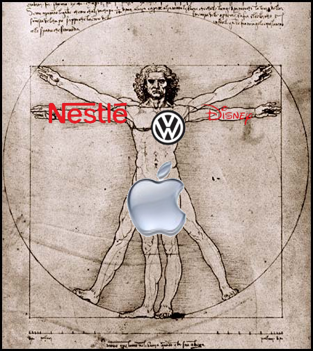
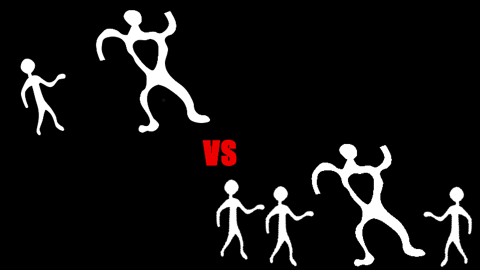

„Verbunden werden auch
die Schwachen mächtig.“
Presenter Notes
tante
- blog http://the-gay-bar.com
- twitter @tante
- Wissenschaftler
- Spackeria
- Affenfreund

Presenter Notes
Macht
Presenter Notes
- Wie kann man über postprivacy sprechen, wo es doch Machtgefälle gibt?
- "Die machtFrage"
- Wie ist Macht definiert?
Macht
“Jede Chance innerhalb einer sozialen Beziehung den eigenen Willen auch gegen Widerstreben durchzusetzen, gleichviel worauf diese Chance besteht.”
(Max Weber, "Wirtschaft und Gesellschaft")
Presenter Notes
- Macht: Die Welt so zu lenken, wie man will
- auch: Gegen den Willen anderer
- Unterschiedliche Sichtweisen:
- Hannah Arendt: Positiv, Menschen organisieren sich
- Negativ: Unterdrückermacht
Quellen der Macht
Presenter Notes
- Macht hat unterschiedliche Quellen
- Für die Debatte um Privacy sind dabei vor allem 2 wichtig
ökonomisch begründete Macht

Presenter Notes
- globale Konzerne
- Alles was kaufbar ist ist möglich
- De facto eigene Armeen
- Das "Cyberpunk"-Szenario
- Einsatz der Macht zur Profitmaximierung
politisch begründete Macht
Presenter Notes
- findet "Niederschlag" Polizei usw
- Macht Dich als Person Deiner Rechte zu berauben
- Hausdurchsuchung
- Freiheitsentzug usw
Weak and Powerless

Presenter Notes
- Der Mächtige unterdrückt den kleinen
- Der kleine ist ausgeliefert
- Wie kann David so dumm sein, Goliath noch mehr Munition zu geben?
Privacy

Presenter Notes
- Privatsphäre will das Machtgefälle mitigieren
- David ist weniger sichtbar
- weniger Angriffspunkte und Munition für Goliath
- Cloak of Invisibility +1
One step back
Presenter Notes
- Diesem Verständnis liegt ein Menschenbild zugrunde
- Das gucken wir uns jetzt mal an
Der Mensch
 (Der menschliche Körper, Leonardo da Vinci)
Presenter Notes
- (Ja sorry, da Vinci hat das Ding geschlechtsspezifisch gemacht :/)
- Der Mensch, abgegrenzt:
- Seine (Privat-)Sphäre ist sichbar
- Keine Verbindungen
Individualismus

Presenter Notes
- Individualismus ist dem Kapitalismus nützlich
- Zum verkaufen als Gefühl ("Apple, Think Different!")
- Aber warum sonst?
"Teile und Herrsche"
Presenter Notes
- Julius Caesar?
Solidarität

Presenter Notes
- Den einzelnen macht Goliath platt
- je mehr es werden, desto schwerer
- SOLIDARITÄT
Angriff auf die Machtgrundlage
Presenter Notes
- Politik versucht, Shitstorms zu vermeiden
- Firmen wollen Profite nicht gefährden
Was hat das mit Privatsphäre zu tun?
Presenter Notes
- Gute Frage!
- Es geht um Anschlußfähigkeit, um Verbindungsmöglichkeiten, um Connectivity
- Zum verbinden müssen Menschen sich sichtbar machen
Ich bin ein Knoten in einem soziotechnischen System, einem Netzwerk.
Presenter Notes
- "No man is an island" John Donne in 1624
- "Declaration of Interdependence"
- Wir können alleine nichts erreichen
- Sozio_technisch_: Man kann durch verdatung viel rauslesen
Das Netzwerk: Der Verräter
Presenter Notes
- Aus Netzwerken läßt sich alles mögliche ableiten
- Bsp.: Sexualität im Netzwerk
- Alle Deine Freunde A, Du ? => Du A.
Beispiele
Presenter Notes
Boycotaufrufe
- Kindle "gelöscht"
- Der Shitstorm wirkt
- ZDFneo "Klaas und Joko"
- Erfolg trotz guten Einsatz nicht durchschlagend
- zu kleine Gruppe?
- Facebook diverse Proteste
- Kein Erfolg
Presenter Notes
- Kindle war nicht gelöscht, aber egal
- Es ist nicht einfach und eine große gruppe hilft nicht automatisch
Refugeecamp
- Die Refugees sind maximal angreifbar (keine Lobby, fast rechtlos)
- Die Unterstützer, machen sich sichtbar und angreifbar
- Aber ohne die Unterstützer
- Camp wäre weg
- Medien hätten es ignoriert
Presenter Notes
- Uns muss klar sein, dass die Unterstützer hier massives Risiko eingehen
- Je kleier die Gruppe desto größer das Risiko
- Obs ohne MdAs funktioniert hätte weiß man nicht
Fazit
Presenter Notes
- Endlich!
Wir haben die Wahl.
Sei unsichtbar, still und "sicher".
oder
Sei potentiell angreifbar und potentiell mächtig.
Presenter Notes
- "play it safe" ist ok, aber verändert nichts
- Pick one.
- Wenn engagieren dann bewusstsein: Es kann schnell gefährlich werden
- Doch Solidarität braucht sichtbarkeit
Danke
Presenter Notes
-
Folien:
-
Contact:
- http://twitter.com/tante
- mailto:tante@the-gay-bar.com
- tante@jabber.org